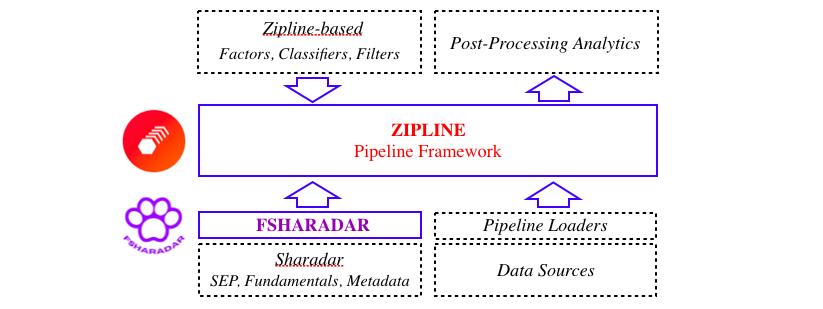

Platform Overview¶
The Zipline-based research platform is built around the Pipeline framework enabling to connect multiple data sources with multiple analytical approaches for conducting diverse backtest studies. The figure provides a conceptual outline of its architecture.
{kind=link}
Within this framework, the Pipeline is a custom collection of cross-sectional trailing-window tasks (Factors, Classifiers, and Filters) propagated by Pipeline Engine through the backtest interval. From the user perspective, the task can be implemented as a specialization of the CustomFactor class with the user-defined method compute().
The Zipline data layer is organized as a collection of named data bundles associated with different data sets. The FSharadar extension implements two bundles produced from Sharadar Equity Prices (SEP), Daily Metrics of Core US Fundamental Data, and asset medatada (e.g. name, type, cusip, etc.) The Pipeline Engine processes the pipeline tasks by accessing the related data bundles with the corresponding Pipeline Loaders.